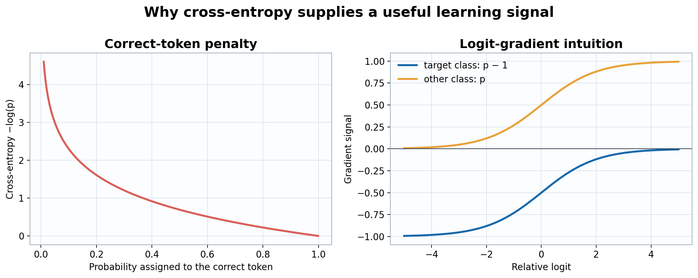

A fresh language model is not a sleepy encyclopedia waiting to be awakened. Its parameters begin as mostly random numbers. If we ask it to complete “The capital of France is,” it has no special reason to prefer “Paris” over “potato.” Training creates that reason.
The basic game is wonderfully repetitive: hide the next token, ask the model to predict it, measure how wrong the prediction was, and make a tiny correction. Repeat this across billions of tokens. The surprising part is that one simple game teaches grammar, style, facts, mathematical patterns, and some forms of reasoning because all of them help predict what comes next.
This chapter follows one sequence through that game. All symbols and dimensions are defined in the notation table. We begin with discrete token IDs, transform them through embeddings, attention, and feed-forward networks, produce a probability for every possible next token, and finally send the error backward.
For tokens \(x_1,\ldots,x_T\), position \(t\) receives the prefix \(x_{1:t}\) and predicts \(y_t=x_{t+1}\). One sequence therefore supplies roughly \(T-1\) training examples without creating separate input files.
The probability of the complete sequence is factorized by the chain rule:
\[p_\theta(x_{1:T})=\prod_{t=1}^{T}p_\theta(x_t\mid x_{<t}).\]
The subscript \(\theta\) reminds us that every probability depends on the trainable parameters. Causal masking enforces the rules of the game: position \(t\) may read positions \(1,\ldots,t\), but it may not peek at future answers.
Next-token prediction needs no hand-written labels; the text labels itself by shifting one position. It also matches generation at inference time, when the model repeatedly predicts one continuation token. The objective is not the only imaginable way to learn language, but it is scalable, dense in supervision, and aligned with autoregressive use.
A token ID is merely an integer label. ID 42 is not numerically “twice as meaningful” as ID 21. The embedding matrix \(E\in\mathbb{R}^{V\times D}\) gives each ID a learned vector:
\[X^{(0)}_{b,t,:}=E[x_{b,t}],\qquad X^{(0)}\in\mathbb{R}^{B\times T\times D}.\]
For MyLLM, \(V=65{,}536\) and \(D=1{,}792\). Tokens that become useful in similar contexts can acquire related vectors, but this geometry is learned rather than built into the IDs.
A bag of token vectors has no order. MyLLM uses rotary position embeddings inside attention rather than adding a separate position vector to \(X^{(0)}\). RoPE rotates pairs of query and key coordinates by position-dependent angles, allowing their dot product to reflect relative displacement.
Each of the \(L=28\) blocks contains two major transformations: causal self-attention performs content-dependent aggregation across token positions, and a SwiGLU feed-forward network transforms each position independently. Residual connections provide identity paths around both sublayers, preserving representations and improving gradient propagation through depth.
For a hidden vector \(x\in\mathbb{R}^{D}\), RMSNorm computes
\[\operatorname{RMSNorm}(x)=g\odot\frac{x}{\sqrt{D^{-1}\sum_{i=1}^{D}x_i^2+\varepsilon_{\mathrm{norm}}}},\]
where \(g\in\mathbb{R}^{D}\) is learned and \(\varepsilon_{\mathrm{norm}}=10^{-5}\) prevents division by an extremely small value. Normalization keeps activation scale predictable. It is applied before each sublayer, so the residual stream itself retains a direct path through the network.
Let \(U=\operatorname{RMSNorm}(X^{(\ell)})\). Learned projections create three views:
\[Q=UW_Q,\qquad K=UW_K,\qquad V_a=UW_V.\]
A query describes what the current position is looking for. A key describes what a source position offers for matching. A value contains the information copied when that source is selected. MyLLM has \(h_q=14\) query heads but only \(h_{kv}=2\) key/value heads, each of width \(d=128\).
The projection matrices and reshaped tensor dimensions are
\[\begin{aligned}W_Q&\in\mathbb{R}^{D\times h_qd},&Q&\in\mathbb{R}^{B\times h_q\times T\times d},\\W_K,W_V&\in\mathbb{R}^{D\times h_{kv}d},&K,V_a&\in\mathbb{R}^{B\times h_{kv}\times T\times d}.\end{aligned}\]
For GQA, define group size \(g=h_q/h_{kv}\) and the KV-head assignment \(\kappa(i)=\lfloor i/g\rfloor\) for query head \(i\in\{0,\ldots,h_q-1\}\). MyLLM has \(g=7\), so query head \(i\) attends using \(K_{\kappa(i)}\) and \((V_a)_{\kappa(i)}\). This mapping makes the sharing rule explicit rather than treating GQA as an implementation detail.
For one coordinate pair, RoPE applies a rotation \(R_t\) at position \(t\):
\[\widetilde q_t=R_tq_t,\qquad \widetilde k_t=R_tk_t.\]
Because rotations compose by relative angle, \(\widetilde q_t^\top\widetilde k_u\) depends naturally on \(t-u\). The base \(\theta_{\mathrm{rope}}=500{,}000\) controls the range of rotation frequencies; it is unrelated to the parameter collection \(\theta\).
More precisely, for coordinate-pair index \(j\in\{0,\ldots,d/2-1\}\), define angular frequency
\[\omega_j=\theta_{\mathrm{rope}}^{-2j/d}.\]
The two-dimensional rotation at position \(t\) is
\[R_{t,j}=\begin{bmatrix}\cos(t\omega_j)&-\sin(t\omega_j)\\\sin(t\omega_j)&\cos(t\omega_j)\end{bmatrix},\qquad R_t=\operatorname{diag}(R_{t,0},\ldots,R_{t,d/2-1}).\]
Orthogonality and the group law imply \(R_t^\top R_u=R_{u-t}\), hence
\[(R_tq_t)^\top(R_uk_u)=q_t^\top R_{u-t}k_u.\]
The attention score can therefore encode relative displacement without a learned absolute-position table.
For one query head, the score from target \(t\) to source \(u\) is
\[S_{t,u}=\frac{\widetilde q_t^\top\widetilde k_u}{\sqrt d}+M_{t,u},\qquad M_{t,u}=\begin{cases}0,&u\le t,\\-\infty,&u>t.\end{cases}\]
Division by \(\sqrt d\) prevents dot products from growing excessively with head width. Softmax converts allowed scores into nonnegative weights that sum to one:
\[A_{t,u}=\frac{e^{S_{t,u}}}{\sum_{j\le t}e^{S_{t,j}}},\qquad O_t=\sum_{u\le t}A_{t,u}(V_a)_u.\]
In matrix form across heads:
\[O=\operatorname{softmax}\!\left(\frac{\widetilde Q\widetilde K^\top}{\sqrt d}+M\right)V_a.\]
Grouped-query attention shares each KV head among seven query heads. The queries can ask fourteen different kinds of question while the stored keys and values occupy only \(2/14\) of the head count required by ordinary multi-head attention.
The head outputs are concatenated and projected back to \(D\) dimensions:
\[H=X^{(\ell)}+\operatorname{Concat}(O_1,\ldots,O_{h_q})W_O.\]
The addition is more than convenient bookkeeping. It lets a block learn a correction to the current representation instead of rebuilding that representation from scratch.
Attention mixes positions; the feed-forward network performs a richer nonlinear computation separately at every position. With \(R=\operatorname{RMSNorm}(H)\), MyLLM computes
\[F=\bigl(\operatorname{SiLU}(RW_g)\odot(RW_u)\bigr)W_d,\]
where \(W_g,W_u\in\mathbb{R}^{D\times D_{ff}}\), \(W_d\in\mathbb{R}^{D_{ff}\times D}\), and
\[\operatorname{SiLU}(a)=a\,\sigma(a).\]
One branch proposes features and the other gates them. The block output is the second residual addition:
\[X^{(\ell+1)}=H+F.\]
Ignoring constants associated with fused kernels, the dense projections in one block require
\[C_{\mathrm{proj}}=O\!\left(BT\left(2D^2+2Dh_{kv}d\right)\right),\]
the score and value-aggregation operations require
\[C_{\mathrm{attn}}=O(Bh_qT^2d),\]
and SwiGLU requires
\[C_{\mathrm{ffn}}=O(3BTDD_{ff}).\]
Thus projection and feed-forward work scale linearly in \(T\), while exact attention scales quadratically. A naive implementation materializes score and probability tensors of shape \(B\times h_q\times T\times T\). For \(B=1\), \(h_q=14\), \(T=8{,}192\), and BF16 storage, one such tensor occupies
\[14(8{,}192)^2(2)=1{,}879{,}048{,}192\text{ bytes}\approx1.75\text{ GiB}.\]
Materializing both scores and probabilities would require approximately 3.5 GiB per layer. Tiled exact-attention kernels avoid storing both full tensors in HBM, reducing memory traffic and activation storage without changing the mathematical operator.
After 28 blocks, final RMSNorm produces \(\widehat X\). The language-model head maps each hidden vector to one score per vocabulary token:
\[z_t=E\widehat x_t\in\mathbb{R}^{V}.\]
The same matrix \(E\) used for input embeddings is reused here; equivalently, row-vector notation uses \(\widehat x_tE^\top\). Tying avoids a second \(V\times D\) matrix and places input and output token representations in the same learned geometry.
Logits are unrestricted scores, not probabilities. Softmax normalizes them:
\[p_{t,j}=\frac{e^{z_{t,j}}}{\sum_{k=1}^{V}e^{z_{t,k}}}.\]
If \(y_t\) is the correct next token, its negative log-likelihood is
\[\ell_t=-\log p_{t,y_t}.\]
For a batch mask \(m_{b,t}\in\{0,1\}\), where zero marks padding or an intentionally excluded target, the exact empirical objective is
\[\mathcal L(\theta)=-\frac{1}{N_{\mathrm{valid}}}\sum_{b=1}^{B}\sum_{t=1}^{T-1}m_{b,t}\log p_\theta(x_{b,t+1}\mid x_{b,1:t}),\qquad N_{\mathrm{valid}}=\sum_{b,t}m_{b,t}.\]
Padding and masked prompt positions are excluded from the valid-token count. Perplexity is \(\operatorname{PPL}=e^{\mathcal L}\); it can be read loosely as the model's effective number of plausible choices at each step.
The next token is a categorical outcome among \(V\) possibilities. Cross-entropy is exactly the negative log-likelihood of that categorical model, so minimizing it is maximum-likelihood estimation. It rewards assigning probability to the observed token, penalizes confident mistakes strongly, and is a proper scoring rule: in expectation, the best report is the model's true belief distribution.
The proper-scoring statement has an exact decomposition. If the true conditional next-token distribution is \(q\) and the model reports \(p\), then expected cross-entropy satisfies
\[\mathbb E_{Y\sim q}[-\log p_Y]=H(q)+D_{\mathrm{KL}}(q\Vert p)\ge H(q),\]
with equality if and only if \(p=q\) on the support of \(q\). The nonnegative KL term is the excess risk caused by reporting the wrong distribution.
Its gradient is unusually clean:
\[\frac{\partial\ell_t}{\partial z_{t,j}}=p_{t,j}-\mathbf 1[j=y_t].\]
The correct logit is pushed upward in proportion to how much probability it lacks; every incorrect logit is pushed downward in proportion to the probability it received.
The Hessian with respect to logits is
\[\nabla_z^2\ell=\operatorname{diag}(p)-pp^\top\succeq0.\]
Cross-entropy is therefore convex in the logits, although the complete neural-network objective remains nonconvex in \(\theta\).
| Candidate | Why it is not the default next-token objective |
|---|---|
| Zero-one accuracy | It changes only when the top-ranked token changes. Almost everywhere its gradient is zero, so it supplies no useful direction for small parameter updates. |
| Mean-squared error on token IDs | Token IDs are arbitrary labels. Predicting ID 100 when the answer is ID 101 is not inherently better than predicting ID 50; numerical distance between IDs has no linguistic meaning. |
| Mean-squared error on one-hot vectors | It can train a classifier, but it does not arise as the categorical log-likelihood and often gives less useful gradients when softmax probabilities become very wrong or confident. |
| Hinge loss | It emphasizes a margin between the correct class and competitors but does not directly train calibrated probabilities, which generation needs for sampling. |
| Contrastive loss | It is valuable for representation learning and ranking, but standard next-token training has an explicit correct class and needs a normalized distribution over the complete vocabulary. |

Figure 1. Cross-entropy strongly penalizes low probability on the correct token, while the logit gradient is predicted probability minus target indicator.
The logit gradient flows backward through the tied head, final normalization, every residual branch, feed-forward projection, attention projection, and embedding lookup. The chain rule accumulates the contribution of every token that used a parameter:
\[g_t=\nabla_\theta\mathcal L_t.\]
Residual connections create short gradient routes, while pre-normalization keeps activation and gradient scales more stable across depth.
AdamW maintains exponential moving averages of the gradient and squared gradient:
\[m_t=\beta_1m_{t-1}+(1-\beta_1)g_t,\qquad v_t=\beta_2v_{t-1}+(1-\beta_2)g_t^2.\]
After bias correction, the update is approximately
\[\theta_{t+1}=\theta_t-\eta_t\frac{\widehat m_t}{\sqrt{\widehat v_t}+\varepsilon_{\mathrm{opt}}}-\eta_t\lambda\theta_t.\]
The adaptive denominator reduces updates in coordinates with persistently large gradients. Decoupled weight decay \(\lambda\) gently discourages parameter growth without being mixed into the adaptive gradient calculation.
If the global gradient norm exceeds threshold \(c\), clipping rescales it:
\[g\leftarrow g\min\!\left(1,\frac{c}{\lVert g\rVert_2}\right).\]
Gradient clipping bounds exceptional gradient norms, but it does not replace learning-rate control. The learning rate \(\eta_t\) remains the principal scale factor for parameter updates; warmup avoids large early updates before the optimizer's moment estimates are reliable, and later decay supports smaller corrections near convergence.
| Stage | Input | Output | Purpose |
|---|---|---|---|
| Embedding | Token IDs \(x\) | \(X^{(0)}\in\mathbb{R}^{B\times T\times D}\) | Replace arbitrary IDs with learned vectors. |
| 28 decoder blocks | Hidden states | Contextual hidden states | Use attention to mix positions and SwiGLU to transform features. |
| Final norm and tied head | \(X^{(L)}\) | Logits \(z\in\mathbb{R}^{B\times T\times V}\) | Score every possible next token. |
| Softmax and cross-entropy | Logits and targets | Scalar \(\mathcal L\) | Measure categorical predictive error. |
| Backpropagation | \(\mathcal L\) | \(\nabla_\theta\mathcal L\) | Assign responsibility to every parameter. |
| AdamW update | Gradients and optimizer state | New parameters | Take one controlled step toward lower expected loss. |